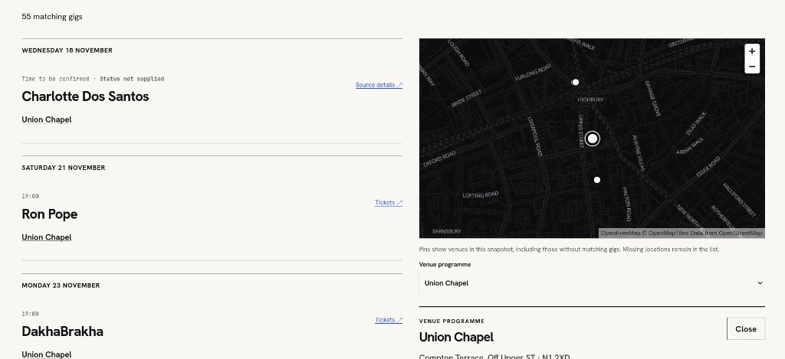
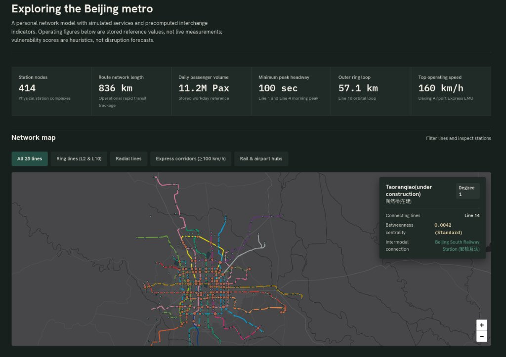

Build notes
Notes on what I’m building
Write-ups from personal projects and research: the question I started with, how I approached it and what I learnt along the way.
London · Music listings
Building a gig finder because I kept missing gigs
How a small annoyance became a project in event data, web development and learning the engineering between the two.

Transport · NetworksModelling the Beijing metro
A fun experiment in turning metro data into an interactive network model, starting with Beijing and exploring how the approach could carry over to other cities.

Published papers are listed in the Publications section.
Browse the projects →